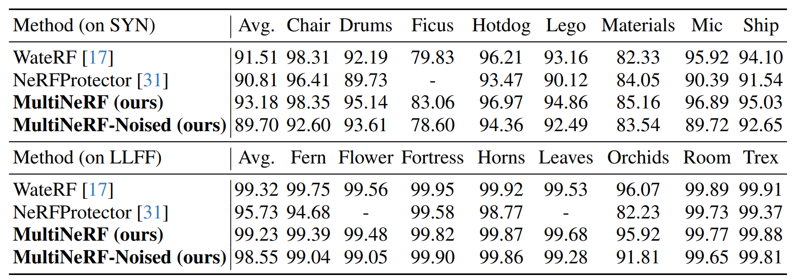
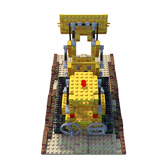
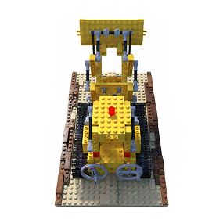
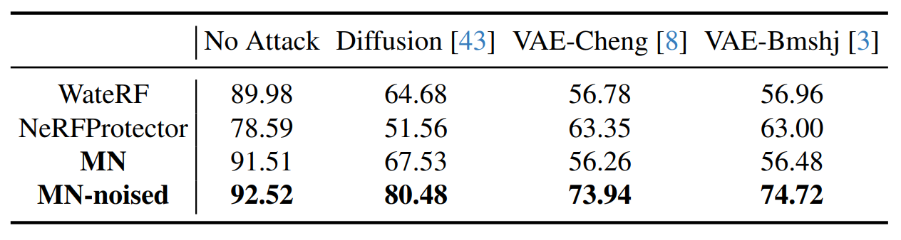

Workshop on Authenticity & Provenance in the Age of Generative AI (APAI), ICCV 2025
MultiNeRF: Multiple Watermark Embedding for Neural Radiance Fields
MultiNeRF embeds multiple watermarks within the representation learned by a NeRF model at training time. Watermarks are keyed by a unique ID specified at rendering time to trigger the embedding of the watermark into the image independent of the viewing position.
Abstract
We present MultiNeRF, a 3D watermarking method that embeds multiple uniquely keyed watermarks within images rendered by a single Neural Radiance Field (NeRF) model, whilst maintaining high visual quality. Our approach extends the TensoRF NeRF model by incorporating a dedicated watermark grid alongside the existing geometry and appearance grids.
This extension ensures higher watermark capacity without entangling watermark signals with scene content. We propose a FiLM-based conditional modulation mechanism that dynamically activates watermarks based on input identifiers, allowing multiple independent watermarks to be embedded and extracted without requiring model retraining. MultiNeRF is validated on the NeRF-Synthetic and LLFF datasets, with statistically significant improvements in robust capacity without compromising rendering quality. By generalizing single-watermark NeRF methods into a flexible multi-watermarking framework, MultiNeRF provides a scalable solution for 3D content attribution.
Key Contributions
Dedicated Watermark Grid
We introduce a dedicated watermark grid alongside existing geometry and appearance grids, preventing entanglement of watermark signals with scene content while improving capacity.

MultiNeRF extends TensoRF by introducing a watermark grid alongside the geometry and appearance grids. Unique watermark IDs are encoded via a learnable embedding network and modulated using FiLM-based conditioning.
FiLM-based Conditional Modulation
Our method uses Feature-wise Linear Modulation (FiLM) to dynamically activate watermarks based on input identifiers, enabling multiple independent watermarks without model retraining. The watermark embedding process uses FiLM-based modulation where the embedding vector $e_n = \text{Emb}(I^{(n)})$ is transformed into modulation parameters:
The final watermarked colour is computed by integrating the modulated watermark features with the appearance grid:

MultiNeRF training process.
Results
Single Watermark Embedding
Performance comparison for single watermark embedding:

Single watermark bit accuracy comparison across different methods on NeRF-Synthetic and LLFF datasets.
Multiple Watermark Embedding
Performance comparison for multiple watermark embedding:

Multiple watermark embedding performance showing MultiNeRF's superior scalability compared to baseline methods.
Visual Comparison
Interactive comparison between MultiNeRF and WateRF-modified. MultiNeRF shows significantly better multi-watermark embedding capabilities — note the reflections and watermark artifacts in the WateRF-modified output.


Robustness to Attacks
We evaluate the robustness of our method against various removal attacks including diffusion-based regeneration and VAE-based attacks.

Robustness evaluation showing MultiNeRF-noised (MN-noised) significantly outperforms baseline methods under various removal attacks.
BibTeX
@InProceedings{Kulthe_2025_ICCV,
author = {Kulthe, Yash and Gilbert, Andrew and Collomosse, John},
title = {MultiNeRF: Multiple Watermark Embedding for Neural Radiance Fields},
booktitle = {Proceedings of the IEEE/CVF International Conference on Computer Vision (ICCV) Workshops},
month = {October},
year = {2025},
pages = {1534--1543}
}